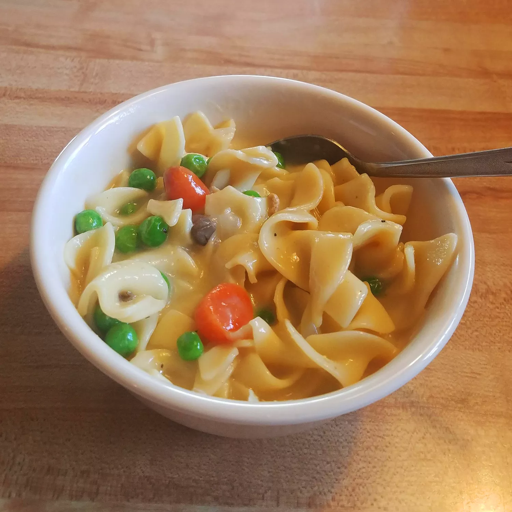

Best world soup

This chicken and noodles recipe was given to me by my aunt. She is known for her chicken and noodles, and everyone thinks she makes them from scratch. This recipe is very easy and fast.
Ingredients
- 3 (14.5 ounce) cans chicken broth
- 1 (26 ounce) can condensed cream of chicken soup
- 1 (10.75 ounce) can condensed cream of mushroom soup
- 2 cups diced, cooked chicken breast meat
- 2 teaspoons onion powder
- 1 teaspoon seasoning salt
- ½ teaspoon garlic powder
- 2 (9 ounce) packages frozen egg noodles
Steps
- Combine chicken broth, both condensed soups, and diced chicken in a large pot. Season with onion powder, seasoning salt, and garlic powder.
- Bring to a boil over high heat and stir in noodles. Reduce heat to low and simmer until desired consistency is reached, 20 to 30 minutes.